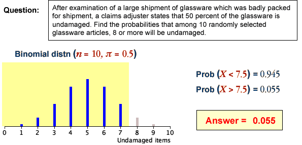

Evaluating binomial probabilities
If we are satisfied that a binomial distribution is appropriate, it can be used to obtain the probability of any number of successes. Binomial probabilities may be obtained using ...
A range of counts
To find the probability that the number of successes is within any interval, the probabilities of each of the integer counts within the interval are added.
When doing this, care must be taken with the wording of the question — think carefully about whether the 'extreme' value that is mentioned in the wording of the interval should be included.
| In words... | In terms of X | Using 1/2 |
|---|---|---|
| More than 5 | X > 5 | X > 5.5 |
| Greater than or equal to 5 | X ≥ 5 | X > 4.5 |
| No more than 5 | X ≤ 5 | X < 5.5 |
| At least 5 | X ≥ 5 | X > 4.5 |
| Fewer than 5 | X < 5 | X < 4.5 |
| 5 or fewer | X ≤ 5 | X < 5.5 |
The above table translates a few possible wordings for an interval into a range of counts. The final column provides an interpretation of each interval that most clearly expresses which counts are included.
We recommend translating any interval into its form using 1/2 before finding its probability.
(This translation of intervals is particularly useful when using the normal approximations that are described in the following pages.)
Examples

Each question involves a binomial distribution whose bar chart is displayed on the left and the integer counts specified in the question are shown in a different colour. The sum of these probabilities (bar heights) is evaluated by the computer and displayed on the right to give the answer.